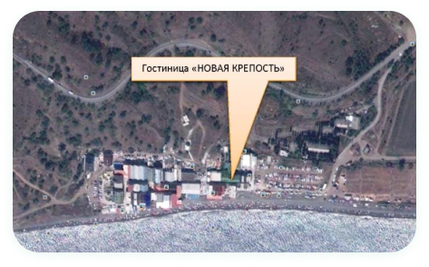
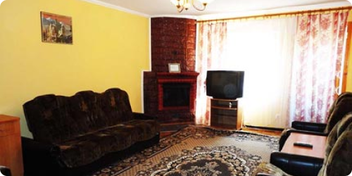
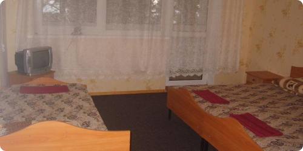
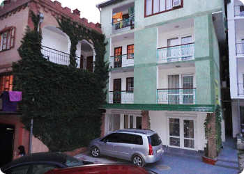
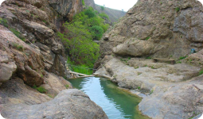
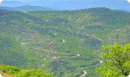
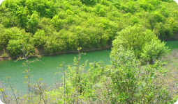
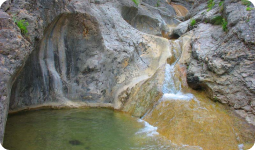
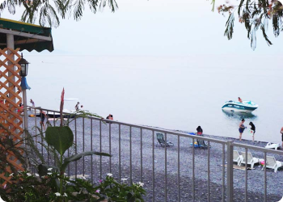

Благородный отдых в Крыму
Климат - лечебный фактор курортной зоны
Богатый растительный и природный мир

Номера

Лоу Дуплекс
ОТ 2200 РУБ. ЗА НОМЕР

БЛОК 2+2
ОТ 1800 РУБ. ЗА НОМЕР
БЛОК 2+2
ОТ 1800 РУБ. ЗА НОМЕР
БЛОК 2+2
ОТ 1800 РУБ. ЗА НОМЕР
БЛОК 2+2
ОТ 1800 РУБ. ЗА НОМЕР
Отдых в Приветном - отдых в Крыму между Судаком и Алуштой.
Место, которое славится своими изумительными винами, и чистейшим песчаным пляжем с мелкой галькой – это курорт Приветное. Именно здесь расположилась гостиница «Новая Крепость», двери которой всегда открыты для постояльцев.
Каждый с нетерпением ждет того дня, когда можно будет отдохнуть от каждодневных хлопот и насладиться ласковым солнцем на берегу моря. Отдых в Крыму – это не только потрясающая возможность удалиться от городской рутины и зарядиться положительной энергетикой, но и наполнить свой организм здоровьем.
Ведь всем известно, что эта местность славится своим целебным воздухом и лечебными грязями, а также чистейшей морской водой. Помимо этого, вы сможете познакомиться с древнейшим прошлым полуострова, провести увлекательное и незабываемое путешествие в мир флоры и фауны.

Одна из особенностей Крыма – его растительный и природный мир.




Свойственными растениями для Крыма являются представители, для которых местом обитания стал южный склон Крымских гор. Причем эти растения произрастают только на полуострове, поэтому в другом месте вы их просто не увидите.
Отдых в Судаке и других крымских курортах обязательно запомнится вам красотой дикого вечнозеленого рускуса и ладанника критского, а земляничное дерево удивит своими плодами. Также здесь растут и культурные растения, с которыми знакомы многие – лавр и кипарис. Не говоря уже о фундуке, ежевике и можжевельнике, которые являются истинными «жителями» Крыма. Так что здесь вам обязательно понравится!
Климат - лечебный фактор курортной зоны.
Черное море и Крымские горы делают климат на полуострове наиболее благоприятным для здоровья. Теплый сезон продолжается полгода – с апреля по октябрь, а солнечных дней здесь гораздо больше, нежели пасмурных – более 285 дней в году. Летний сезон характеризуется теплым и умеренно влажным климатом, что позволяет чувствовать отдыхающим себя комфортно.
Отдых в Крыму на Черном море порадует вас чистым воздухом, который освежается легким морским бризом. Самым прохладным является последний месяц зимы, но даже в этот период температура не опускается ниже отметки +2,90C, при этом температура воды составляет примерно +80C. А в июльские дни, которые считаются самыми теплыми, воздух прогревается до +28,30C. Сезон купания открывается в конце весны и продолжается вплоть до октября – в этот период в среднем температура воды около +17,50C. Любители поплавать в более теплом море предпочитают отдых в Алуште с июля по сентябрь, когда температурные показатели воды составляют +22-230C. Не стоит переживать по поводу штормов – это редкость для летнего периода, причем проходят они очень быстро.

Отдых, проведенный на побережье Крыма, благоприятно влияет на здоровье человека, ведь морская вода обладает целебными свойствами. Содержание в морской воде практически всех элементов, составляющих таблицу Менделеева, оказывают положительное воздействие на весь организм.
К тому же, солевой состав воды в море и человеческой крови практически одинаковы. Во время купания в Черном море организм пополняет свой запас микроэлементов, которые просто необходимы для его нормального функционирования. Ведь цинк, марганец, фосфор, йод и медь проникают в организм через кожу человека.
Приветное - недорогой отдых и море удовольствия.
Недалеко от морской линии, в 50 км на северо-восток от Алушты и в 30 км на запад от Судака, в широкой долине, окруженной горами, находится удивительное место. Поселок Приветное защищен от ветра горными хребтами Караби-Яйлы, поэтому курорт относится к средиземноморскому региону, где преобладает субтропический климат. Если вы любите тишину и спокойствие, тогда для вас это идеальное место!
Прогулки по окрестностям поселка позволят насладиться незабываемой природой, а походы на гору Пастушья башня познакомят вас с историей местности, ведь здесь до сих пор сохранились древние сооружения и остатки защитных стен. При пересечении перевала в северном направлении перед вами откроется наиболее живописная горная дорога полуострова.
Приветное запомнится вам теплым солнцем, чистым морем, свежим воздухом и красивыми горами. Поэтому вы обязательно захотите вернуться сюда снова и еще не один раз!
Фото
.jpg)